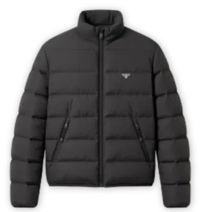
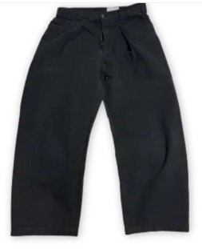
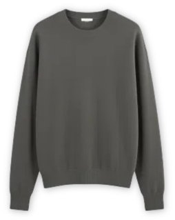
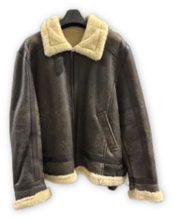
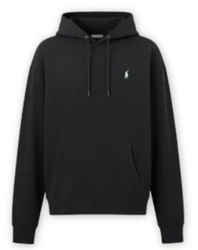
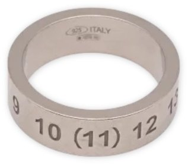
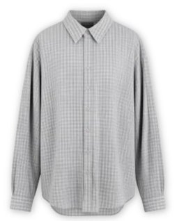
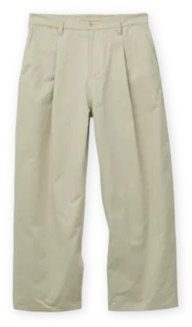
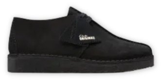

아침 -4°, 낮에도 5°에 그쳐 종일 추워요. 패딩이나 울 코트처럼 두꺼운 아우터에 후드나 니트를 받쳐 입으면 되고, 눈비 걱정은 없어서 스니커즈도 괜찮아요. 캘린더를 확인할 수 없어 일요일은 휴일 외출로 봤어요.
1 / 6
추천
POLO RALPH LAUREN 라이트그레이 후드 + PRADA 블랙 숏 패딩
블랙 패딩과 블랙 청바지 사이에 라이트그레이 후드와 그레이 스니커즈를 넣은 무채색 휴일 코디예요. 블랙 아우터에 데님을 맞추면 꾸미지 않아도 겨울 데일리룩이 된다는 매거진 공식을 패딩으로 옮겼어요. 숏 패딩에 통 넓은 투턱 청바지라 비율이 좋고, 영하 4° 아침에도 따뜻해요.

패딩PRADA 블랙 숏 패딩
PRADA 블랙 숏 패딩이에요. 목까지 지퍼를 올리면 머플러 없이도 버틸 만해요.
후드POLO RALPH LAUREN 라이트그레이 후드
POLO RALPH LAUREN 라이트그레이 후드예요. 후드를 패딩 밖으로 빼서 얼굴 쪽을 밝혀요.

청바지ART IF ACTS 블랙 투턱 청바지
ART IF ACTS 블랙 투턱 청바지예요. 통이 넉넉해 숏 패딩과 균형이 맞아요.
스니커즈발렌시아가 그레이 청키 스니커즈
발렌시아가 그레이 청키 스니커즈로 후드의 그레이를 발끝에서 한 번 더 받아요.
백팩YOUTH 블랙 백팩
YOUTH 블랙 백팩이에요.
대안
브라운야드 딥그린 니트 + IN SILENCE 블랙 싱글 코트
블랙 롱코트에 니트와 데님을 받치는 미니멀한 코트 코디예요. 블랙과 차콜 위에 딥그린 니트 하나만 색으로 써서 차분하게 포인트를 줬어요. 저녁 약속이 생겨도 그대로 나갈 수 있는 조금 더 갖춘 버전이에요.
코트IN SILENCE 블랙 싱글 코트
IN SILENCE 블랙 싱글 코트예요. 길이가 길어 찬 바람을 잘 막아줘요.

니트브라운야드 딥그린 니트
브라운야드 딥그린 니트예요. 이 코디의 유일한 색이에요. 추우면 안에 얇은 티를 한 장 더 입어요.
청바지siiido 차콜 커브드 청바지
siiido 차콜 커브드 청바지로 코트의 격식을 조금 풀어줘요.
구두DR. MARTENS 블랙 레더 구두
DR. MARTENS 블랙 레더 구두예요. 밑창이 두꺼워 찬 바닥에서도 발이 덜 시려요.
숄더백르메르 블랙 호보 숄더백
르메르 블랙 호보 숄더백이에요.
대안
POLO RALPH LAUREN 블랙 후드 + NOIR LARMES 브라운 무스탕
브라운 무스탕 하나만 색으로 쓰고 나머지는 블랙으로 눌러준, 결이 다른 캐주얼 코디예요. 색을 절제하고 가죽·양털·스웻의 질감 차이로 보는 재미를 줬어요. 무스탕 안쪽 양털 색에 맞춰 아이보리 스니커즈를 신어요.

무스탕NOIR LARMES 브라운 무스탕
NOIR LARMES 브라운 무스탕이에요. 안감이 양털이라 셋 중 가장 따뜻해요.

후드POLO RALPH LAUREN 블랙 후드
POLO RALPH LAUREN 블랙 후드예요. 무스탕 카라 사이로 후드만 살짝 보이게 입어요.
긴바지SONGZIO 블랙 와이드 긴바지
SONGZIO 블랙 와이드 긴바지예요. 밴딩이라 하루 종일 편해요.
스니커즈아이보리 레더 스니커즈
아이보리 레더 스니커즈로 무스탕의 양털 색과 이어줘요.

반지메종 마르지엘라 실버 반지
메종 마르지엘라 실버 반지예요.
옷장 자동 조합
파브레가 그레이 체크 셔츠 + DISCOVERY 블랙 롱 패딩
같은 날씨와 격식 기준(무채색 위주, 포인트 컬러는 하나까지)으로 옷장에서 자동으로 고른 조합이에요.

셔츠파브레가 그레이 체크 셔츠
패딩DISCOVERY 블랙 롱 패딩
청바지SONGZIO 블루 밴딩 청바지
스니커즈발렌시아가 그레이 청키 스니커즈
백팩YOUTH 블랙 백팩
옷장 자동 조합
ART IF ACTS 차콜 웨스턴 셔츠 + 지오송지오 블랙 후드 패딩
같은 날씨와 격식 기준(무채색 위주, 포인트 컬러는 하나까지)으로 옷장에서 자동으로 고른 조합이에요.
셔츠ART IF ACTS 차콜 웨스턴 셔츠
패딩지오송지오 블랙 후드 패딩

긴바지쿠어 베이지 투턱 긴바지

구두클락스 오리지널스 블랙 스웨이드 구두
크로스백생로랑 블랙 나일론 크로스백
옷장 자동 조합
ART IF ACTS 워시드 블랙 셔츠 + K2 차콜 후드 패딩
같은 날씨와 격식 기준(무채색 위주, 포인트 컬러는 하나까지)으로 옷장에서 자동으로 고른 조합이에요.

 후드POLO RALPH LAUREN 라이트그레이 후드
후드POLO RALPH LAUREN 라이트그레이 후드 스니커즈발렌시아가 그레이 청키 스니커즈
스니커즈발렌시아가 그레이 청키 스니커즈 백팩YOUTH 블랙 백팩
백팩YOUTH 블랙 백팩